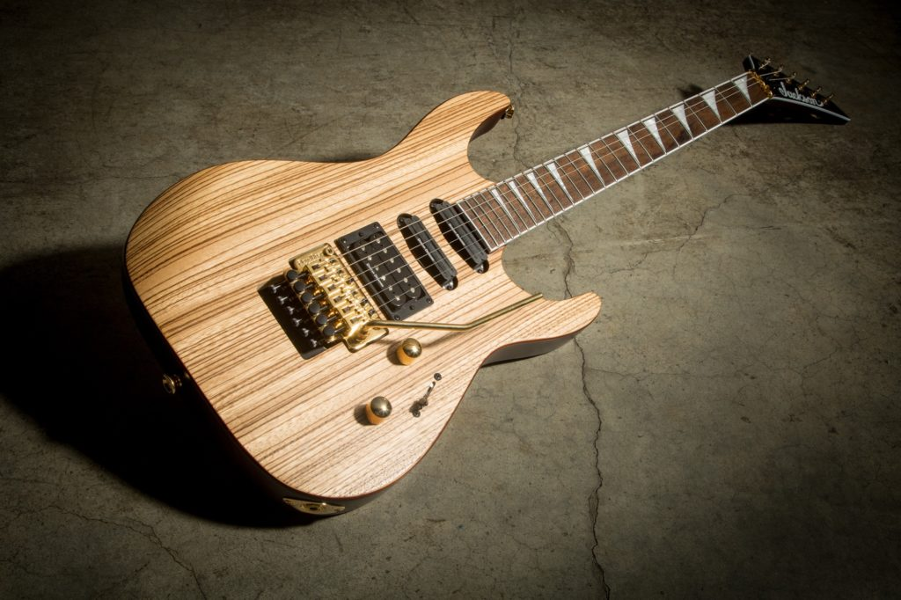
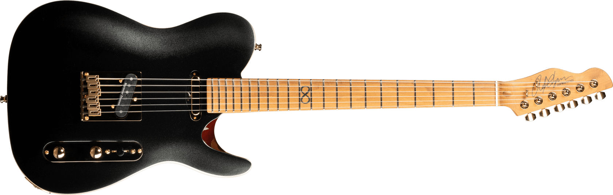
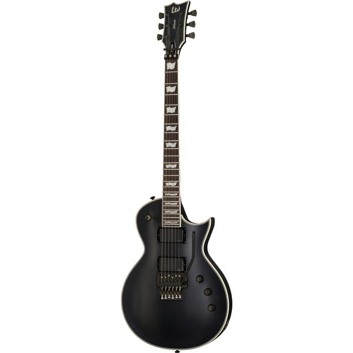

Tämä on kitarasivuni jossa kerron kitaroistani.
Tämä oli ensimmäinen kitarani, ei mikään laadukas mutta oli halpa. Ulkonäöltään todella perinteinen, niin väriltään kuin myös muodoltaan. Tähän on tehty paljon modauksia. Lista kitaraan tehdyistä modauksista:
Tämä oli toinen ostamani kitara. Paljon laadukkaampi mutta myös vähän hintavampi. Tätä myös vähän modattu elektroniikkojen osalta. Tämä on lempikitarani. Tykkään etenkin kaulan muodosta. Tykkään myös todella paljon tämän kitaran ulkonäöstä.
Tämä oli kolmas kitarani. Todella tyylikäs ja laadukas, mutta jäi vähäiselle soitolle joten möin sen kaverilleni.
Tämä on viimeisin ostamani kitara. Todella laadukas mutta myös hintava. Ulkonäöltään todella simppeli, mutta mielestäni tyylikäs. Kaikin puolin todella hyvä kitara.
Tässä oli lyhyt esittely kitaroistani. Pidän niistä kaikista, käyttömäärä riippuu siitä millaista musiikkia soitan, sillä ne ovat kaikki eri vireissä.
Tässä vielä lista jossa on kitarani hintajärjestyksessä kalleimmasta halvimpaan. Hintaan ei sisälly modauksien hintoja.